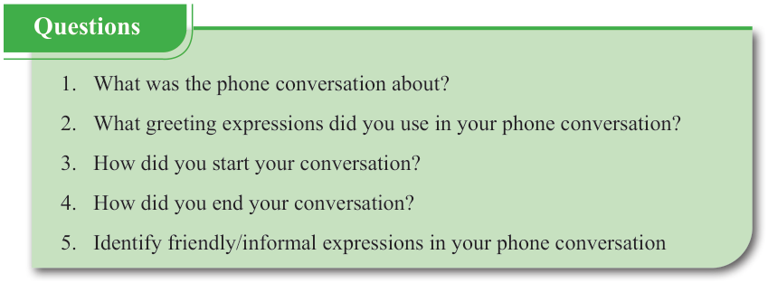
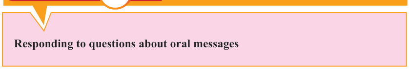

English for Secondary Schools Student’s Book Form One, printed page 116

Green question box listing five questions about a phone conversation: what it was about, greetings used, how the conversation started, how it ended, and friendly or informal expressions used.Questions
- 1. What was the phone conversation about?
- 2. What greeting expressions did you use in your phone conversation?
- 3. How did you start your conversation?
- 4. How did you end your conversation?
- 5. Identify friendly/informal expressions in your phone conversation
Task marker showing a clipboard and pen inside an orange circle and red panel.
Orange section header labeled Task.Think of any formal context. Then, prepare and practise a phone conversation.
Activity 3

Pink title box reading Responding to questions about oral messages.Responding to questions about oral messages
Responding to questions in familiar contexts
(a) Read and practise the dialogue between a doctor and a patient. Then, answer the questions that follow.
[A patient visits the hospital for a medical check-up. He meets the doctor. Their conversation is as follows:]
Patient:
Excuse me doctor! May I come in?
Doctor:
Yes of course, you are welcome!
Patient:
How’re you, Doctor?